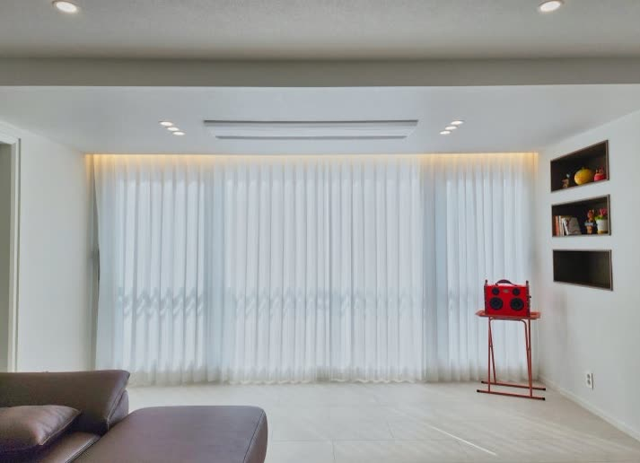
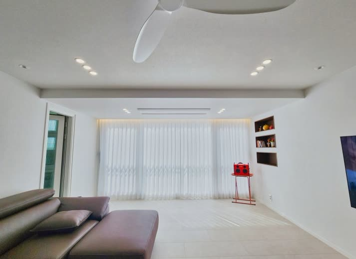
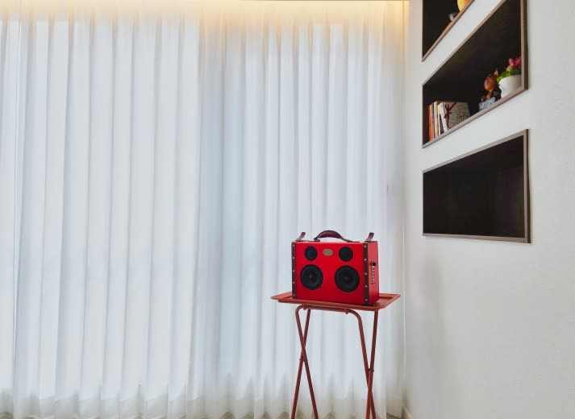
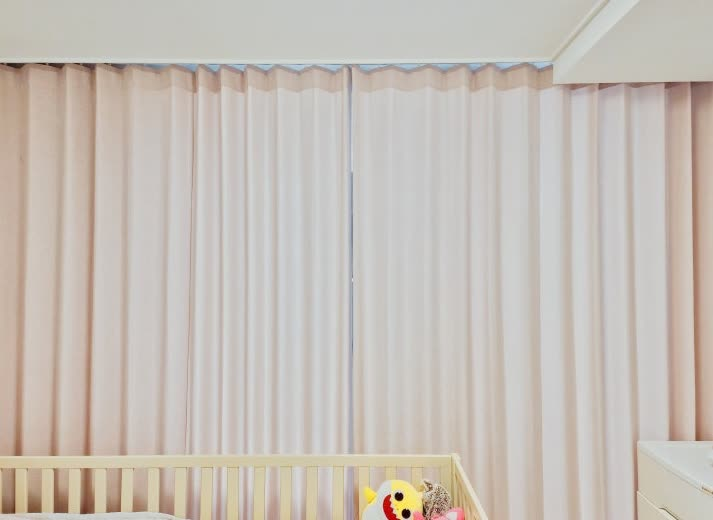
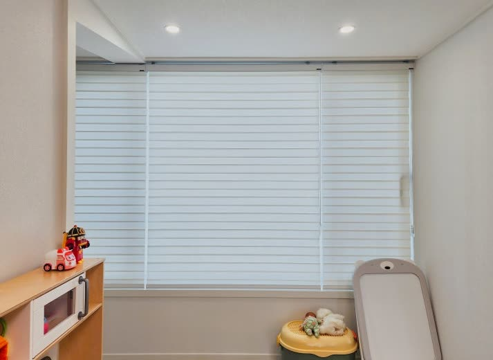

2026년 6월 30일 시공
영주 가흥동 아파트
거실 · 아이방 · 놀이방 커튼 시공후기

영주 가흥동 아파트에 다녀왔습니다.
거실과 아이방, 놀이방까지 집 전체 창을 한 번에 하시는 댁이었습니다.
집 전체를 한꺼번에 꾸밀 때 가장 어려운 건 방마다 쓰임이 다르다는 점입니다.
거실은 환해야 하고
아이방은 포근해야 하고
놀이방은 빛 조절이 편해야 합니다.
같은 커튼을 전부 똑같이 달면 어느 한 공간은 반드시 아쉬워지기에, 이번에는 공간마다 다르게 잡아 드렸습니다.
거실은 밝고 개방감 있게 — 화이트 헤비쉬폰
거실은 가족이 가장 오래 머무는 공간이라 채광을 살리는 게 우선이었습니다.
다만 통창이라 바깥 시선도 신경 쓰이는 자리여서 화이트 헤비쉬폰으로 잡았습니다.
헤비쉬폰은 일반 쉬폰보다 원단에 도톰하게 무게감이 있는 속커튼입니다.
얇은 쉬폰은 하늘하늘한 대신 비침이 있는데, 헤비쉬폰은 낮에 빛을 부드럽게 들이면서도 바깥에서 안이 잘 보이지 않습니다.
주름도 묵직하게 잡혀 커튼 라인이 한결 고급스럽게 떨어집니다.
속커튼만 단독으로 걸어도 형태가 잡히는 원단이라, 밝고 개방감 있는 거실을 원하실 때 많이 권해 드립니다.
화이트라 공간이 한층 넓고 환해 보입니다.

우물천장 라인까지 깔끔하게
이 집은 거실에 우물천장과 커튼박스가 있어 그 라인을 따라 단정하게 시공하는 게 마무리의 핵심이었습니다.
커튼박스가 있는 집은 레일을 박스 안에 숨길 수 있어, 커튼이 천장에서 바로 떨어지는 것처럼 보입니다.
커튼박스 안으로 깔끔하게 넣어 레일이 보이지 않게 정리하니 천장 라인이 더 살아납니다.
이런 디테일이 같은 커튼도 더 고급스럽게 보이게 합니다.


아이방은 포근한 인디언핑크로
아이방은 분위기를 가장 중요하게 봤습니다.
아이가 지내는 공간이라 차갑지 않고 포근했으면 하셨고
인디언핑크 커튼으로 따뜻한 무드를 냈습니다.
인디언핑크는 쨍한 핑크가 아니라 톤이 한 단계 가라앉은 색이라, 아이방에 써도 튀지 않고 은은하게 따뜻합니다.
커튼 원단이 소리를 한 겹 잡아 주는 효과도 있어, 아이방을 한층 차분하게 만들어 줍니다.
벽지와 어우러지면서 방 전체가 한결 아늑해졌고, 아이도 좋아할 색감입니다.

놀이방은 빛 조절 간편한 콤비블라인드
놀이방은 시간대에 따라 빛을 자주 조절하는 공간이라 커튼보다 블라인드가 맞았습니다.
콤비블라인드는 비치는 원단과 불투명 원단이 가로로 번갈아 배치된 구조라, 원단을 위아래로 살짝 움직이는 것만으로 채광과 가림이 조절됩니다.
낮잠 잘 때는 겹쳐 내려 어둡게, 놀 때는 살짝 어긋내 환하게 — 하루에도 몇 번씩 쓰임이 바뀌는 놀이방에 잘 맞습니다.
커튼과 달리 원단이 바닥에 닿지 않으니, 장난감이 오가는 놀이방 바닥을 넓게 쓸 수 있는 것도 장점입니다.
색은 백아이보리로 잡아 방이 답답해 보이지 않습니다.
집 전체를 한 번에 하실 때는 이렇게 공간마다 무엇이 맞는지부터 정하는 게 중요합니다.
가격이 고민이신지 디자인이 고민이신지에 따라 안내가 달라지니 편하게 말씀 주세요.
온라인 판매가 그대로 시공까지 진행하고, 견적 보신 뒤 결정하셔도 전혀 부담 없습니다.
영주를 포함한 대구·경북·부산·울산·경남 전 지역 찾아갑니다.